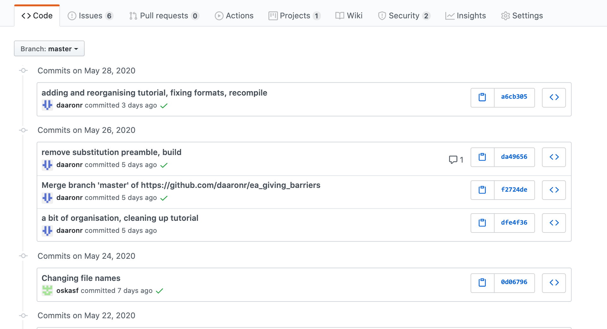
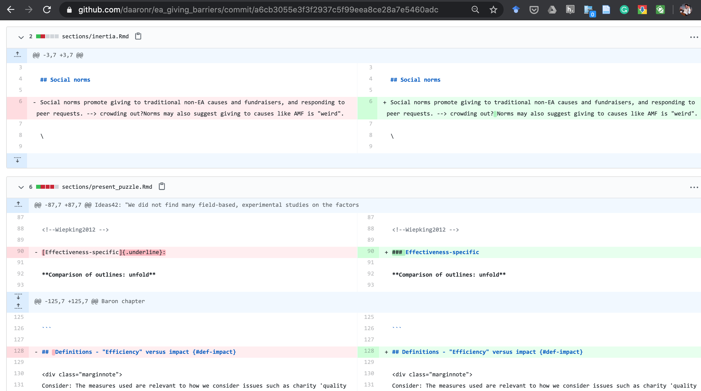
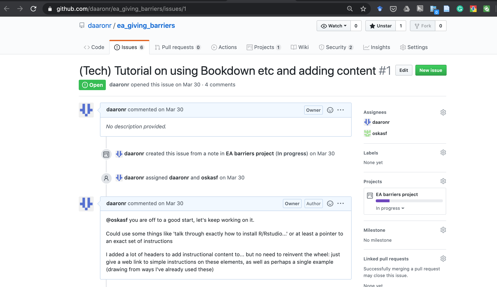
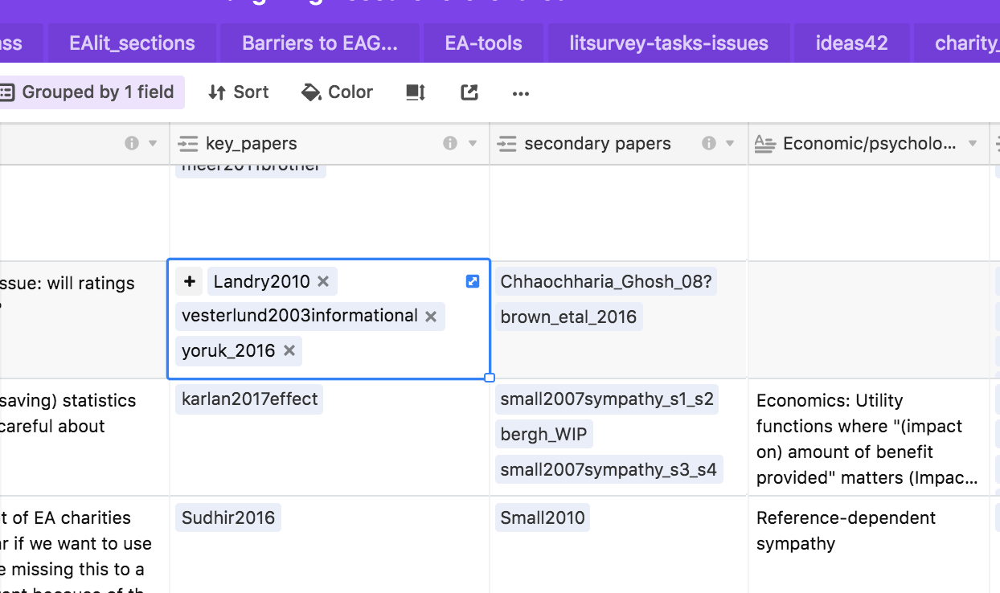
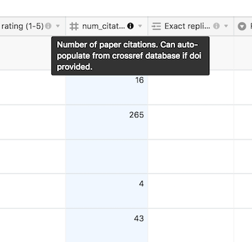
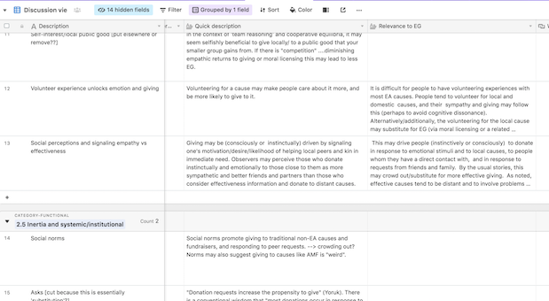
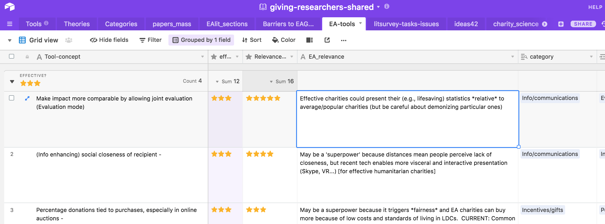

Sepal.Length Sepal.Width Petal.Length Petal.Width Species
1 5.1 3.5 1.4 0.2 setosa
2 4.9 3.0 1.4 0.2 setosa
3 4.7 3.2 1.3 0.2 setosa
4 4.6 3.1 1.5 0.2 setosa
5 5.0 3.6 1.4 0.2 setosa
6 5.4 3.9 1.7 0.4 setosaAppendix A — Tech
Tech for creating, editing and collaborating on this ‘Bookdown’ web book/project (and starting your own)
This tutorial written by Oska Fentem with David Reinstein
6 Apr 2022: We are moving/have moved to quarto, so some of the discussion below is outdated. Quarto.org provides excellent tutorials and tools.
A.1 Introduction
This appendix provides a brief introduction to the several types of software and processes used to creating websites such as Increasing Effective Charitable Giving and Researching and writing for Economics students. We aim to encourage others to participate in this collaborative work, and to spin off their own projects. If you would like to provide feedback or ask a question about these projects then using ‘hypothes.is’ is an easy way to do so (please write directly in the html and contact me at daaronr at gmail dot com to let me know you’ve done so).
You can also contribute content through the Airtable forms (see above).
Update: There is now a tool ‘trackdown’ that allows decent integration with Google Docs. Please let me know if you would like me to make a ‘collaborative Google doc’ for any of these chapters.
The template for my bookdown projects is maintained in my repo here
28 Jan 2022 – I may be changing this to this template developed at Rethink Priorities.
This site (web-book project) is
Hosted:
- Hosted on Github (Github pages)
- A project managed out of a Git repo stored in Github
The content is:
- A ‘Bookdown’ (in the ‘Gitbook’ style, although we’ve drawn elements from the Tufte style)
- …which is a hosted collection of HTML (and other) files…
- …constructed/compiled/built from R-Markdown (.Rmd) files and other support files using the R language
This relies heavily on:
- ‘Markdown syntax’ for basic writing/formatting
- Latex for mathematics notation
- Bibtex for references/citations
- ‘Pandoc’ to convert between different document formats
- CSS (style sheets)
To build this, we chose to use tools and software including:
- The RStudio environment for working with R code
- Github desktop to manage pushing/pulling and integrating content (although sometimes we use raw Git)
- Features of the GitHub website such as ‘projects’
We first give a brief overview of R & RStudio, Git & Github, and R Markdown & Bookdown, linking more extensive further resources/tutorials.
A.2 Git and Github
- Git is a version control system which enables users to track changes and progress in coding projects or any files in general. It is particularly useful for collaborating on projects as it provides a useful way to show who has altered which files and when. Users are even able to clone a repository (a folder inside of a project which tracks all changes made) and make changes without affecting the original project. Git also provides a very simple way to keep changes to projects up to date across different operating systems such as Windows and Mac. Installation and configuration of Git can be confusing to the newly-initiated user, Happy Git provides a user friendly tutorial on installing Git, which can be downloaded here.
A.2.1 Some key things to know about Git and GitHub
A brief overview of key functions inside Git (assuming a remote Github repo) including commits, pushes & pulls, forks & branches and pull requests: (unfold)
Note
- Cloning a Git repository copies an existing Git repository into your local file space.
- A commit saves the changes made in the current document to the local repository. Specific changes to commit to the remote (online) repo must be specified. This process is made much easier using a program such as Github Desktop rather than the Git code itself (although they do the same thing, and the latter is more flexible).
- A push, pushes all local commits to the online version of this repository, essentially updating the online version of the files, to the version which is stored locally on your device.
- A pull, is used to pull the changes made to the online repository, into the local repository. Thus making the local repository up to date with the remote/online repository.
- Creating a branch allows you to create a separate version of a repository and make changes to this without affecting the master/original repository.
- A pull request then allows you to pull the changes made in a branch over to the master repository, in order to merge the work.
- As noted, Github Desktop provides a user interface for a more simple and intuitive way to use Git. There are a variety of other interfaces.
- Github can also be integrated into RStudio and into many other tools, such as the Atom text editor.
- Repos that are stored on Github can be accessed via a browser at github.com. The Github website itself provides a wide variety of tools, discussed further below under ‘GitHub web page’,
Git and GitHub can be a bit confusing. Here are some things that I wish I had known, that took my a while to figure out (unfold)
Note
Git and Github are not the same thing … (explain)
A ‘commit’ does not actually change the files in the shared (remote) Github repo; you need to ‘push’ to do that
After ‘pulling’ from the remote repo, you may need to merge changes… (explain)
You can have several different ‘branches’ of the same Repo existing at the same time. When you switch to a new ‘branch’ the files you see on your computer will instantly and amazingly change to exactly the files in that branch. But don’t worry, the old branch is not lost.
… add some more
A.3 R and RStudio
- R is a free programming language which is mainly used for data analysis and statistics. It can be downloaded here. The popularity of R is growing in Economics Academia, largely due to the growth of Machine Learning techniques in R as well as the flexibility of the language itself. R makes use of packages which are a collection of functions written in order to achieve specific tasks. Whilst R comes pre-installed with a variety of useful packages, it is often useful to install more, which can be done using the install.packages command.1
If you like, you can try out R-code in the online tool here:
- RStudio is a programming environment and interface which helps facilitate a variety of tasks such as writing scripts using R (as well as other languages), and building/knitting these into various document formats. RStudio ‘Addins’ can also be extremely useful for things like tracking ‘todos’, adding citations, and formatting code. RStudio can also be configured so as to work seamlessly with Git (more on this later). RStudio can be downloaded here
Installing R and Rstudio should take about 20 minutes.
A.4 Markdown and Bookdown
Markdown is a popular set of formats (really a ‘syntax for specifying output’) for generating and authoring documents. The Rmarkdown format (rmarkdown package) is one flavor of Markdown that works with R to enable ‘dynamic documents’ involving text, data-analysis, and other elements. It can then export your work to a variety of outputs such as html, pdf and word documents. As well as this it can also be used to create webpages, such as the one you are currently reading. The power of Markdown files comes from the way that they are able include/embed code as well as data and tables, which is useful for writing reproducible research and creating websites.
The Bookdown package was built on the Rmarkdown package, but it adds many features to enable larger and more structured output, particularly ‘web books’ and web sites. As we use it, this these books combine multiple Rmarkdown files, with each such ‘Rmd’ file becoming its own HTML page.2
stackedit.io can help you practice your markdown, or work on it in a nearly-WYSIWYG environment.
To work on the files in a github archive directly in stackedit.io:
Make sure you are a member of the archive
Go to https://stackedit.io/app#
Click the “#” in the upper right corner
Click ‘synchronise’ and add your github account
Click ‘open from github’
Fill in the url for the github repo, e.g., https://github.com/daaronr/ea_giving_barriers/,
- and the (folder and) file you want to edit, such as README.MD) (Not sure if rmd works; gotta check)
It should then come out with two panels. Left panel=code, right panel=output in a nice format, auto-updating. You can open one, close the other, etc., and there are lots of tips/tools.
Hitting ‘synchronise’ should push your changes to the Github repo (but doublecheck this is working)
A.5 The code and folder structure in this repo, and what it means
A.5.1 Writing_econ_book: Files-folders of interest (taken from readme March 2020)
docs: html output put here for web hosting
Folder: writing_econ_book
- bookdown.yml: determines which files are included in the book
- writing_econ_gfm.Rmd: The main content; body of the book (many chapters)
- index.Rmd: Setup content and some styling/parameters; determines how the book is built (into which format, etc)
- header_include.html: Important commands included here including folding boxes
- references_cut.bib: bibtex references referred to in ‘@ref’ notes
- tufte_plus.css: Determines layout and styling
- writing_econ_book.Rproj: ‘project’ … to work on this in R-studio
A.6 Adding the main content… the code in a single “.Rmd” file
…and how it translates into content
Video guides
In the video: intro to rmd and bookdown - template HERE I introduce the basics of the Bookdown setup and folder structure, using the bookdown template repo files as an example.
I further discuss the elements of the .Rmd (and associated) files, and how they translate into html output in the video: rmarkdown content from template HERE
My apologies: In these videos my dumb head is blocking an important part of the screen share. It may help you to have the original files up to see the missing bits. I hope to redo these when I have a chance.
2022 update: The guides below (presented for Annabell Rayner) may be more watchable:
Note: The key files and settings for my bookdown projects are maintained in my repo here, along with a minimal example. This is (or should be) synchronised with all the other repos.
A tip: ‘find in files’
‘Find in files’ is a nice tool when working in Rstudio for a project combining many files.
In menu bar, select: - Edit - Find in files…
Or use the (built in?) shortcut (in Mac) <Shift>-<cmd>-f
A.6.1 Basic (R-)Markdown
The Markdown format offers a simple plain-text notation for specifying the elements of documents, reports, web sites, etc. (It is much simpler and easier to read than html, latex, etc.) It is widely used by programmers, on comment boards/forums, and throughout the internet. For example, GitHub.com automatically renders markdown code, particularly in readme.md files.3
Markdown documents are usually saved as plain text files with the extension .md, e.g., report.md. These allow for an easy way to create a variety of outputs, particularly reports and text-focused web pages. The markdown format is converted into other formats (html, latex, etc.) with a variety of tools, particularly something called Pandoc.
What is Pandoc?
Pandoc is a tool (a program) for converting from one document format to another. It is incredibly powerful. The great thing about a format like markdown, or r-markdown, is that it is simple to write and peruse, and, with the help of Pandoc, it can convert into many many other useful formats for web pages, documents, presentations, etc.
Pandoc is built into other tools including the RMarkdown package (see discussion on Stackexchange here).
You can also install and use Pandoc directly in the command line, or try it out (in a limited but still useful way) on the web here
For more on Pandoc visit pandoc.org
In the R (statistically focused) language there are tools such as knitR that allow R users to produce reports combining text, statistical output, and interactive content. These are generally written in “R-markdown” documents, saved as .Rmd rather than .md files. The R-studio interface, and several “add-ins”, also help facilitate this. This interface is very useful; in fact, it may be convenient to build web books and other content using this even if you are not planning to extensively integrate R code and data. (As in the present book, although I’m hoping to build this in).
Using R-markdown and Knitr (and other tools and add-ins like ‘Bookdown’) content from multiple sources can easily be embedded into these documents allowing users to easily display objects such as plots or regression output.
A.6.2 Some simple markdown rules
Text can be made italic using single asterisks *italic or bold by using asterisks **bold**.
Hashtags/pound signs (#) specify headers and subheaders, e.g., this third-level subsection header was created with the code:
### Some simple markdown rules {#simple-md-rules}
Where the bit in the curly braces allows us to link-back with the code [link back text whatever](#simple-md-rules) … rendering as link back text whatever.
Other key features are ordered lists and unordered lists:
- unordered first entry
- unordered second entry
- subelement of second entryWhile basic markdown has a limited set of rules, there are many more formatting and content options for documents produced in (R)-Markdown, far too many to detail here. These may combine markdown code, html code, latex code, and more. The following cheatsheets are very useful for writing (R)-markdown documents:
Markdown documents allow for an easy way to write reports. Content from multiple sources can easily be embedded into these documents allowing users to easily display objects such as plots or tables of data.4
There are various text formatting options in Markdown, far too many to detail here… The following cheatsheets are very useful for writing markdown documents:
See also (most useful, but highly detailed):
Code chunks provide an easy way to embed code into your R Markdown files. The code language is not just limited to R either, as other languages can be used. This means that there is a wide variety of content which can be displayed in a chunk. Such as tables of data:
Code chunks are defined by wrapping text inside ``` ```. The above example was coded using:
```{r}
head(iris)Options can be specified inside of the curly brackets {} More information is provided here
A.6.3 Inline code
Inline code is a quick and easy way to put snippets of R code. As an alternative to using code chunks, R code can simply be placed inside of `r `. For example, this can be used as an easy way to insert the value of a variable into a paragraph without inserting a chunk.
A.6.4 Latex/maths
R Markdown also can make use of the LaTeX document preparation system, which is popular for writing technical documents with mathematical content. This allows us to publish documents which include equations such as:
\[y = \beta_0+\beta_1x_1 +\beta_2x_2+...+\beta_kx_k+u\]
Which is written using $$y = \beta_0+\beta_1x_1 +\beta_2x_2+...+\beta_kx_k+u.$$. Using $$ means that the equation will be centered on the page. Alternatively $ can be used in the same way, without the centering.
A very useful guide to maths in R Markdown provides a detailed outline of the various mathematical symbols which can be used.
A.6.5 Custom styles
Bookdown allows for users to build their own custom styles in order to change the appearance of documents. To create styles for HTML projects a custom css file is used. For these projects, styles are contained in support/tufte_plus.css. To use a defined style, the user can specify options at the start of a chunk, or using a HTML wrapper as show below for margin notes.
More on creating styles here. Below will outline several key styles used throughout these projects:
‘Notes’
` can be specified at the start of the block, or a HTML wrapper can be used. This assigns the .note formatting from the tufte_plus.css file to the chunk.
- Margin notes Margin notes are used throughout these projects as a way of displaying information in an organised and aesthetically pleasing way. To add a margin note, text is placed inside the following HTML wrapper:5
{html}^[Your margin note goes here. ]
Or margin notes can be added by using chunk options.
- Folding boxes
` at the start of a chunk, or using a HTML wrapper.
A.6.6 Adding references/citations
As with any academic work, it is always important to reference sourced material. Across these projects the following software is used:
- Setup
Pandoc provides a way to generate formatted references as well as a bibliography in R-Markdown.
The bibliography file to be sourced is specified within ‘YAML’ content, which guides the processing of these documents. (YAML content is generally enclosed with a three-dash --- break at top and bottom.)
I generally specify the bibliography source in the YAML at the top of the .Rmd file, or for Bookdown projects in the the YAML content in index.Rmd.
- BibTeX
The BibTeX format refers to a stylized file format which is used predomoninantly for lists of references, mainly and originally for working with latex.. BibTeX bibliographies use the .bib extension. For example the bibliography for this project is references.bib. For more information on BibTeX see here
- Zotero
Zotero is a free open source reference manager, which enables users to sync their library of references across multiple devices. Similarly to other reference managers, Zotero offers plugins for popular browsers such as Chrome and Safari. This project makes use of a shared reference library in Zotero, contact daaronr AT gmail.com to be added. Download Zotero
- Better BibTeX for Zotero
Better BibTeX for Zotero is a add-on for Zotero. Among other things it allows the Zotero library to be exported from Zotero for use in Markdown. Installation instructions are provided here.
- Citr package (addin) for RStudio
*Note 1 Jun 2021:** The discussion of Citr is now mainl outdated, as there is now citation support within Rstudio, at least in the visual mode. I have removed this from the content (14 Jun 2021)
A.6.7 Specific system for adding references in this project
Method 1 (recommended): Rstudio visual markdown editor
Install Zotero software, Rstudio, and
citrpackage (an ‘Add-in’). Make sure all are running.Join the Zotero reinstein_research_and_impact_collabs group
Make sure the group library is syncronised with your Zotero
Try to add the citation/reference using the visual markdown editor in Rstudio (see here)
Note that
[(at symbol) reference]gives a different format than(at symbol) reference(see below test).If the reference is not present, add it to the Zotero library (there are various methods, from Google Scholar etc) and synchronise your library, and try it again.
If you are not sure what the reference is, consult the Airtable, use context, and consult other survey papers. If you are still not sure ask on Github.
Method 2: Dropbox-syncronised Zotero to bibtex
(I’ll explain this later)
Adding a shortcut key for ‘insert citations’ in R-Studio
You may be able to save time in adding citations (via the CitR add-in in R-Studio) if you use a shortcut key.
Select (menu bar):
- Tools
- Addins
- Browse addins
Click in box “keyboard shortcuts”
Click the addin “Insert Citations” under ‘shortcuts’, and enter a keyboard shortcut of your choice.
A.6.8 A test of adding references
Test a reference from reinstein_bibtex.bib: Fong and Oberholzer-Gee (2010) no brackets (Fong and Oberholzer-Gee 2010) with brackets
A.7 How to ‘build’ and view the book
One way is within RStudio
Be sure Github repo is synced so all files are present
Packages need to be installed, but this should (?) be done automatically when you build via the
source(here("code", "baseoptions.R"))line in index.Rmd- knitr is a key package
17 Nov 2021 update: I’m re-working this to use the ‘renv’ tool for organizing packages
Click ‘Build’, ‘Build all’, or the shortcut key shift-cmd-b
- … this seems to run the command
rmarkdown::render_site(encoding = 'UTF-8')
- … this seems to run the command
Building may take some time, depending on how much code is present in the Rmd files and what that code does
17 Nov 2021: I’m changing this so that this will be done through executing the root directory file main.R.
This should be better structured and more consistent with how I do this in my other bookdowns. s
It puts all the Rmd files specified in the _bookdown.yml into a single file, here labeled barriers-to-effective-giving.knit.md (I think), and then turns that into html, also invoking bibtex along the way
Depending on your RStudio settings (-Tools, -Project Options, -Build tools, -Preview book after building), it may put up a ‘preview version’ of the site. Sometimes an error will appear such as “some/file not found”, this can typically be bypassed by clicking open in browser.
All the ‘new’ output is directed to be put in the ‘docs’ folder, a bunch of html files. You can view those ‘local’ files in any web browser
Once you commit and push, the ‘new’ bookdown website should be up on the WWW
A.7.1 Exporting Rmarkdown to Google Docs/Drive
Note: the trackdown package also seems to be a particular useful extension to this.
Suppose that we wish to share our work with collaborators who aren’t familiar with Github or Rmarkdown. In this case we may find it useful to export work to Google Drive. This process is easy in R as we can use the googledrive package and markdrive packages. Below we will outline a basic workflow for rendering Rmarkdown and uploading these files to Google Drive. During this process files are rendered and converted to Google Docs.
library(markdrive)
# Render and upload Rmarkdown file
gdoc_render(filename="sections/barriers_old_classification.Rmd",
gdoc_name= "A test",
gdoc_path= "Test folder")In the above example we render an Rmarkdown document to HTML and upload the corresponding document to Google Drive. This process tends to work best with Rmd files with html_document output.
One drawback of this method is that rendering and uploading files multiple times will result in multiple files. That is, duplicate files are not identified and removed automatically. This is possible when uploading files to Google Drive using the googledrive package, however, due to the need to render and convert our Rmarkdown file we must make use of the markdrive commands which do not support this. We now consider a workflow which identifies existing files and moves these to trash. This ensures that we do not create duplicates when uploading.
Warning: Make sure that you do not already have files with duplicate labels inside your gdoc_path. Otherwise these files will be deleted.
library(googledrive)
library(markdrive)
# Define files and folders for simplicity
gdoc_file <- "A test"
gdoc_path <- "Term 2"
local_file <- "test.Rmd"
# Check if our file to upload exists already
# If so move this file to trash
if (gdoc_file %in% drive_ls(path=gdoc_path)$name) {
drive_trash(as_dribble(paste(gdoc_path, gdoc_file, sep="/")))
}
# Render and upload Rmarkdown file
gdoc_render(filename= local_file,
gdoc_name= gdoc_file,
gdoc_path= gdoc_path)A.8 Joining this project
Note: Peter Hurford offers a very quick and practical introduction to Git and Github HERE (curated links and advice).
Happy Git and GitHub for the useR is also recommended for those working with R (statistics/data)
Get a Github account, contact daaronr AT gmail.com and tell him your github account ID (or the email you used to join should probably work as well)
Remember to ‘accept’ the invitation to the repos (here, the EA_giving_barriers repo; and possibly some other supporting repos as well). You should receive this invitations via email and it should also be in your “notifications” on Github.
A.8.1 Creating a Branch and a ‘pull request’
A.8.2 GitHub web page content
As noted, GitHub is a web page and interface that acts as an external server and storage space for git projects/repos. It works well with this and also incorporate several additional features. You can see it and even interact with much of a repo simply via the GitHub webpage without even installing Git (but I strongly recommend that you do install Git as well as a tool like GitHub Desktop, unless you want to solely rely on command line Git).
Web page for a repo
 knitr::include_graphics(‘../picsfigs/ea_barriers_github_repo_startpage.png’)
knitr::include_graphics(‘../picsfigs/ea_barriers_github_repo_startpage.png’)
In your account when you click on the repo you’ll see something like the screen above. There are many tabs, starting with the code tab. At the top of this, you will see the list of folders and files, with messages describing the latest comments.6
Note here we also see:
48 ‘commits’
2 ‘branches’
2 contributors
Below this, some options allowing you to switch branch, manually upload files, clone or download etc.
Readme for a repo
Below the list of files you should see the “readme” for this repository. This is a file ‘README.md’ stored in the root directory of this repository. If you click on it or look at the file you’ll see it is written in markdown syntax but the GitHub website renders it into a nice format.
I typically use this readme to explain what the project is about and describe (and link) the folder structure.
Seeing recent commits, history and ‘blame’

Above, this shows the most recent commits.
Clicking on one of these commits will show you ‘what changed’ and old versus new versions.

For example, above we see something like a “split diff” view, with the ‘old version’ (before this commit) on the left and the ‘new version’ on the right. What is new is in green (with a ‘+’), and what is removed is in red highlight (with a “-”).
Here we see that …
in the file ‘sections/inertia.rmd’ a space has been added after ‘crowding out?’7
in ‘present_puzzle.Rmd’ an (obsolete) ‘underline’ notation has been replaced with a third level markdown header (three
#marks)
Commenting within commits, etc., tagging collaborators in this
One way to ask questions, comment on changes and let people know about changes you made, is via adding a comment within a commit itself. (Check: can this be tied to an ‘issue’?)

Above, we see that by clicking on a plus sign that appears just to the right of the the line number when viewing a commit, we can add a comment on that particular part of the commit. We can then flag another collaborator (see ‘@daaronr’ above … when you type the ‘@’ you get a dropdown of collaborators) who will be notified of this.
This mode of commenting and conversation has the advantage of avoiding cluttering up the actual code and text with excess comments.
You can also link each comment to an ‘issue’ (issues are discussed below) by adding a hash to the comment and citing the issue number. This comment and link to the place in the code or text for that commit will then show up when you look at that issue. This makes the discussion more organized, at least we hope.

The ‘Project’ board and ‘Issues’
I discuss these features in a video guide here starting at about 11:46.
[2022 video presenting this to Annabell Rayner HERE)[https://www.dropbox.com/s/fdp2vycyanumgqa/github_project_boards_and_issues.mp4?dl=0]
Note that the ‘project board’ and ‘issues’ are just tools on the Github web site for discussing and managing the project; these are not files or data, it’s a built-in tool.
the Project is a ‘Kanban board’ for managing tasks, responsibilities and progress
these should be entered as ‘issues’, enabling assignments and further discussion within the ‘issues’ pages



A.9 Airtable and innovationsinfundraising.org
This project is closely connected to innovationsinfundraising.org. Much of these projects overlap, and there is a shared ‘database’ stored as an airtable Giving researchers shared
We had an earlier … tutorial on using the Airtable and Innovationsinfundraising.org here
I add a few more points below, more relevant to the current project:
Airtable
Airtable is a collaborative web-based software with a variety of displays and organizational structures; it has many features of a relational database, and even more features if one engages their API. It is user-friendly, with a gui resembling a spreadsheet, and easy tutorials, instructions and examples. You can operate it from a browser or a web-driven app.
How to think about Airtable, learning it without getting overwhelmed… ::: {.callout-note collapse=‘true’} A good way of starting with Airtable/databases is to think
These are just a bunch of spreadsheets or individual ‘data sets’; I’ll treat them as separate for now
- Nice, it’s a bit easier to quickly add entries if I choose single or multi-select field types , or chechkboxes
Hey look, if I make this a “Link” field type can easily add rows from sheet B into sheet A, that’s cool!
- And I can also ‘create new rows in B while adding them to A’
Cool, sheet B now has a column indicating where it has been entered into sheet A
Hmm, sheet A has stuff on it that is not relevant for our partner; let me create a simpler ‘view’ of sheet A filtering out rows hiding columns that are not relevant to our partner.
:::
Key features of tables in Airtables (quick views)
Each Airtable user can have any number of Bases, and bases can be shared in work groups.
- Command-K to jump to any other Base
“key_papers”; the papers providing the most relevant and strongest evidence for the tool, and “secondary papers”.
Key content
The “Categories” table provides and explains a number of “schema” we use to characterize both the tools and the “Barriers to effective giving” (discussed later).

Key papers are stored and organised in the ‘papers_mass’ table. This is crosslinked in several other tables. Within each paper ‘row’ there is a variety of relevant information and discussion on each paper.

The fundingwiki app automatically populates and updates information on the number of times each paper has been cited, using the Crossref database. Tool such as these will enable this to be a perrennial resource, rather than a frozen-in-time evaluation.

Note: Some but not all of the Airtable content discussed in the rest of this subsection has already been incorporated into the present bookdown.
The table “EAlit_sections” outlines the (earlier?) structure of the EA barriers paper, already providing links to information that will be integrated.

This table also links directly to the papers_mass table, organizing the papers we are referencing and reviewing in each section.

The separate “Barriers to EAG” table is below.
This organizes and assembles the discussion and evidence on potential factors and categories of factors that may explain the limited amount of “effective giving”. This represents the largest part of our review paper; we focus on clear definitions of the most relevant psychological (and “behavioral economic”) biases, and carefully asses the available evidence. We focus specifically on evidence in the charitable domain, but we also consider the broader evidence for these biases in other contexts.

For each barrier or bias, we consider why it is may be particularly relevant to effective giving.

We further propose and discuss tools addressing these barriers and promoting effective charitable giving.

A.10 Useful resources
Like most things, when working with code the internet is your best friend. Listed below are several useful resources for learning about the material mentioned above:
A.10.0.1 R Markdown: The definitive guide
A.10.0.2 R for Data Science
A.10.0.3 YaRrr! The Pirate’s Guide to R
A.11 Further misc notes
For ‘unpublic unhosted’ Github bookdowns (unlike this one…)
Note
I keep updating and pushing the bookdown on the Github. As you know, if you have Github desktop it is automatically set to ‘background fetch’ every hour (I think), so you will regularly have the most recent update on your hard drive in your chosen folder. Then all you need to do to ‘keep a tab on this’ is have the local location opened or bookmarked in a browser, and refresh when you want to see the new state of things.
What if you want to take notes or comment on that? You can either do so on Github, on the files themselves (and then push them), or, perhaps easiest, with hypothes.is. But how can you take notes on hypothesis on an unhosted document…? You can still use hypothesis in your browser, and then highlight and comment: But what’s the good of that? You can still search groups or tags on the hypothes.is search engine, and see new comments along with the highlighted text (but you don’t see them in the full page context).
If you are familiar with Python, these R packages are roughly comparable to Python’s modules.↩︎
Look at the list of headings on the left of this page: each second-level header is it’s own web-page (a distinct html link). “All the content in one scrolled page” is limited to a single first-level header. ↩︎
Actually there are several varieties of markdown, but they mainly share key elements.↩︎
Text can be made italic using single asterisks
*italic*and bold by using double asterisks**bold**.↩︎The margin notes used in this project are inspired by the Tufte handout style developed by American statistician Edward Tufte.↩︎
Once you’ve installed Git you will want to ‘clone this repo’ to have it on your machine and to be able to easily work with it and commit and push and pull changes. You will do this clone either via the web site, GitHub Desktop or another application, or using the command line↩︎
This is but one way to view and consider changes. Various text editors such as Atom and ViM also offer great tools, as does the Git program itself and the GitHub desktop application.↩︎
Again, this is older work, maybe already incorporated into the Bookdown?↩︎
Comments/notifications
In a variety of places within a repo when you are adding comments or content you can refer to a collaborator who will then receive a “notification” linking this content. (These are also called “callouts” in some systems.) These may come as as emails to that collaborator if they set a setting to get email notifications, but they will definitely appear as a notification, again that bell thing in the upper right hand corner.